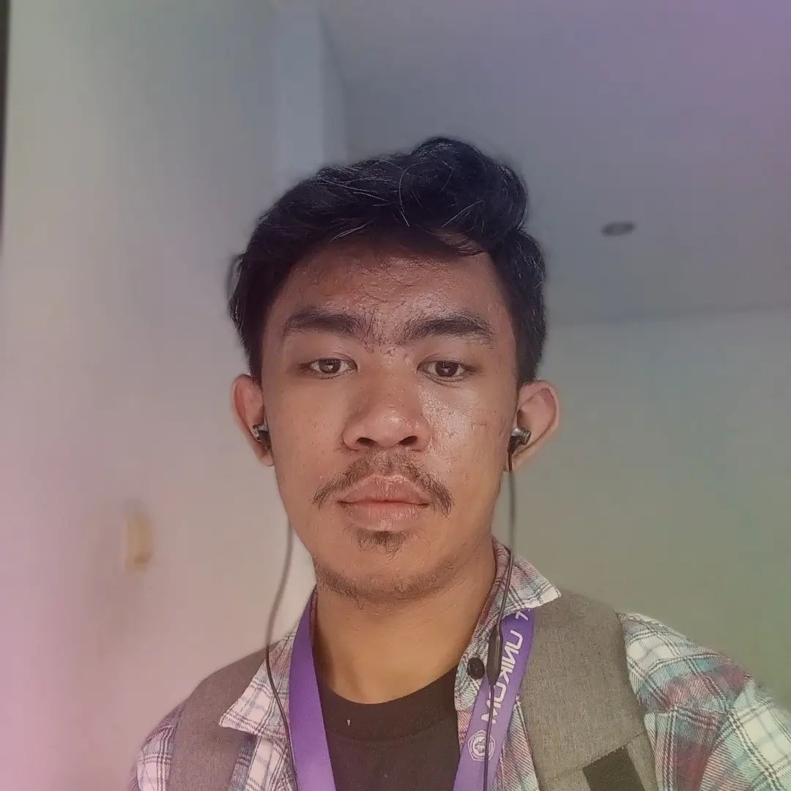

About Me

Ervin Erviansyah
Desainer Grafis
Seorang desainer grafis dengan pengalaman 2 tahun di industri desain grafis. Telah terbiasa dengan pembuatan desain untuk berbagai media seperti logo dan branding, ilustrasi, dan layouting. Terbukti pernah mengerjakan proyek desain untuk 15+ klien dan menjuarai kontes desain.
Pendidikan
Universitas Komputer Indonesia
Desain Grafis — D3
September 2023 — Sekarang
SMK Negeri 2 Bandung
Multimedia — Junior Multimedia
Juli 2019 — Juli 2022
Pengalaman Bekerja
Freelancer
Desainer Grafis
Agustus 2021 — Sekarang
- Bekerja sama dengan klien dan tim proyek untuk mendapatkan masukan dan memastikan desain yang dihasilkan sesuai dengan visi mereka.
- Menyempunakan desain berdasarkan umpan balik, mempersiapkan file desain dalam berbagai format, dan memastikan kualitas dan kesesuaian teknis sesuai dengan kebutuhan penggunaan yang ditentukan.
Pusat Penelitian Teknologi Informasi dan Komunikasi — Institut Teknologi Bandung
Desainer Grafis — Institut Teknologi Bandung
Februari 2021 — Juni 2021
- Mengembangkan konsep desain yang kreatif dan menarik untuk berbagai keperluan klien, seperti logo, 3D modelling, dan user interface (UI) desain.
- Bekerja sama dengan tim untuk memahami kebutuhan mereka, menerima masukan, dan menghasilkan desain yang sesuai dengan identitas merek serta tujuan pemasaran yang diinginkan.